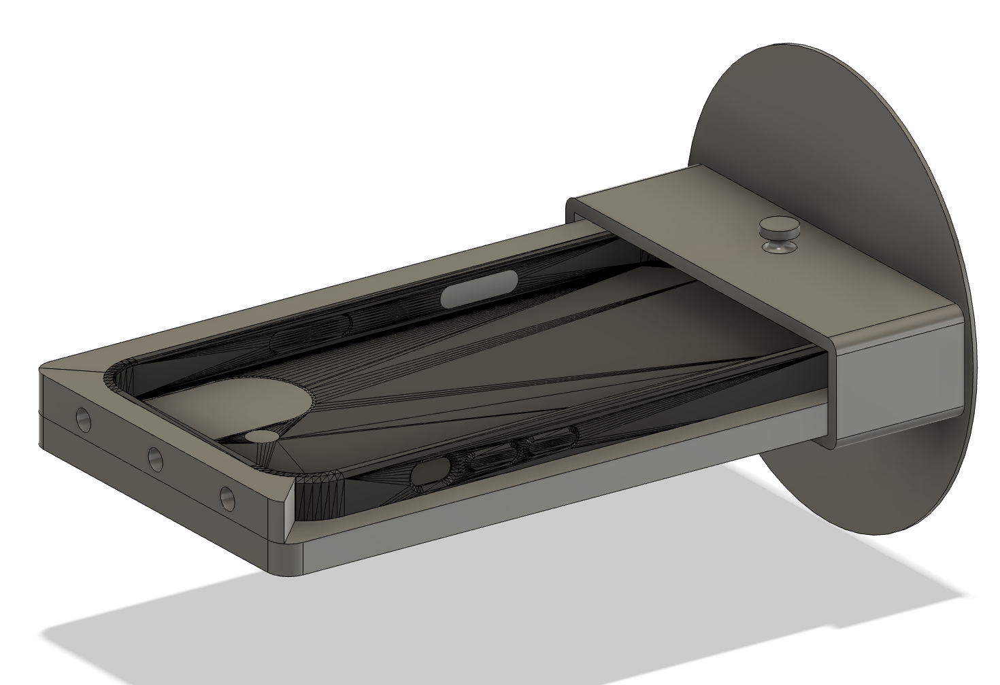
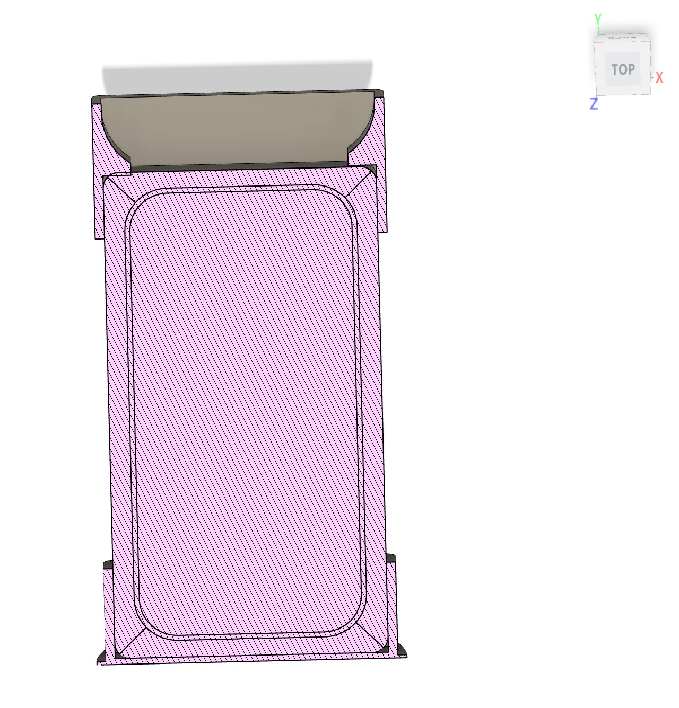
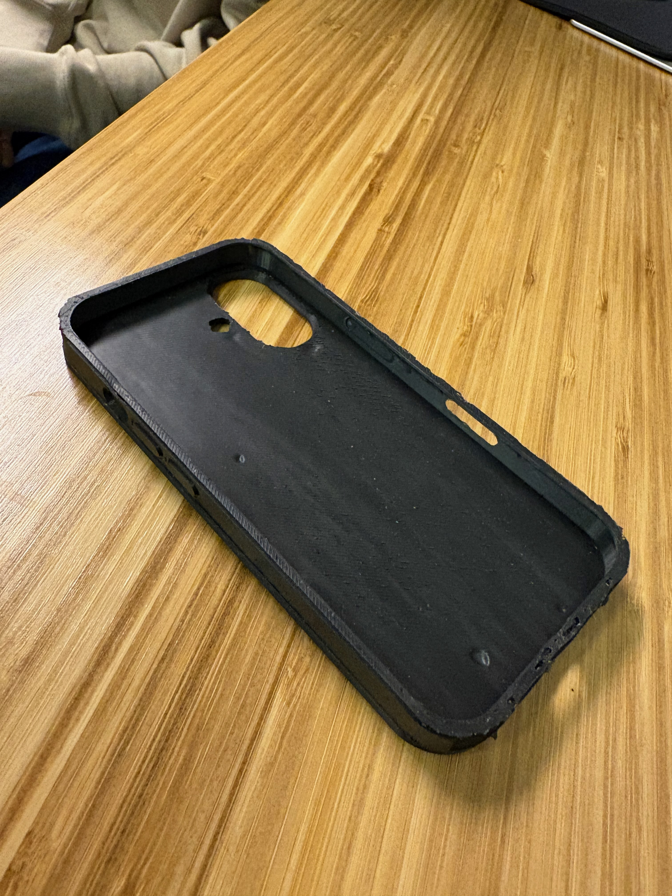
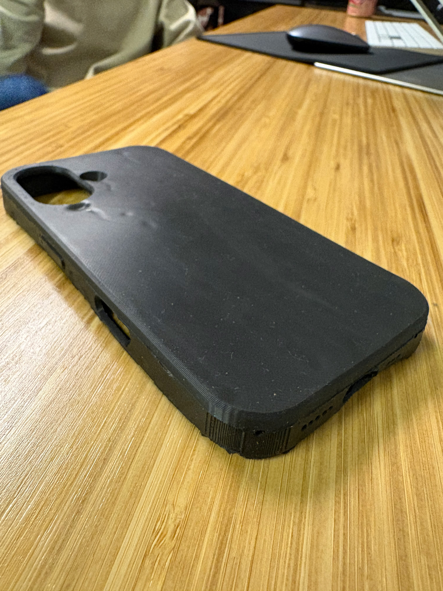
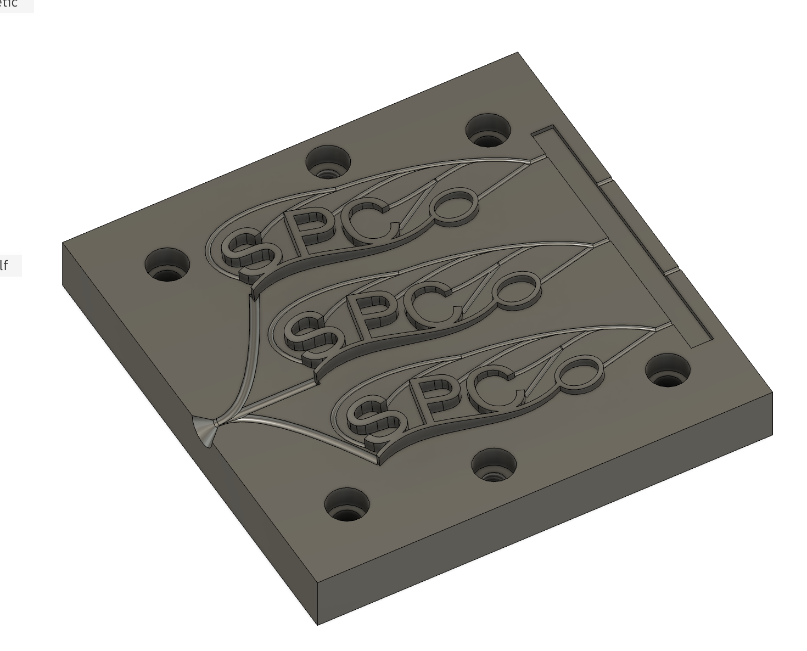

Tooling design for production plastic parts — phone cases, multi-cavity logo molds, and more
A collection of injection mold tooling designed in SolidWorks for production-ready plastic parts. Each mold is designed with proper draft angles, gate and runner systems, parting line placement, and cavity layout for efficient, defect-free shots. Parts range from iPhone cases to branded multi-cavity logo molds destined for China manufacturing.
Two-part mold for an iPhone case — designed with a sprue and fan gate system, full draft on all walls, and a clean parting line along the case perimeter. Cross-section view shows cavity geometry and wall thickness uniformity.


Physical iPhone cases shot from the mold — showing both the inner (cavity side) and outer (core side) surfaces. Clean release with no warping or sink marks.


Three-cavity mold for the South Park Commons logo — single sprue fanning into three balanced runners, one per cavity. Designed for maximum throughput per shot with consistent fill across all cavities.
